|
|
HELP FIND THE FOLLOWING LOCATIONS
PAGE 9
GIDEON’S WAY: The Reluctant Witness (Jeremy Summers, April 1965)
- Car yard Red Carter (Mike Pratt) and Syd Carter (David
Gregory) go to scrap yard to buy log books from wrecked cars. They are observed
by Tiny Bray (Frederick Peisley).
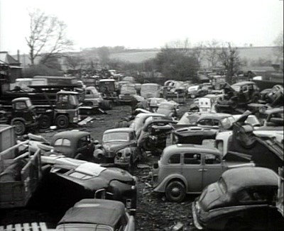
 Could be P7
Could be P7
G19 - Red Carter (Mike Pratt) and his gang use a garage (Whetstone Garage,

- Tiny Bray (Frederick Peisley) rushes home. Mrs Martha Bray (Gretchen Franklin) goes next door to borrow some tea.
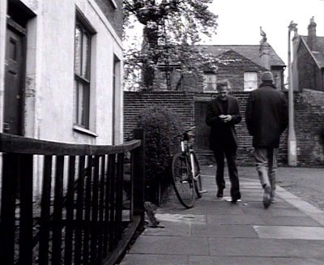
G20 - Rachel Gully (Audrey Nicholson) walks to the florists and chats to a
Policeman, PC Moss (Trevor Banister) on the way (St. Alban’s
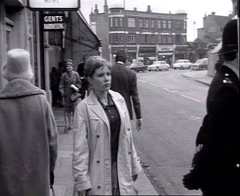
(Spotted Geoff Dodd, March 2003)
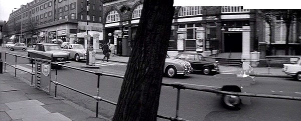
(Spotted Geoff Dodd, March 2007)
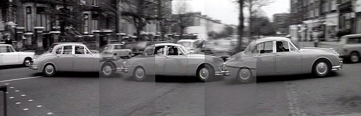
– They drive along a quiet residential street.


- ……they find a Zephyr and Larry Larkin
(Dervis Ward)
gets out to steal it.
(Identified by Alan Field, June 2008)
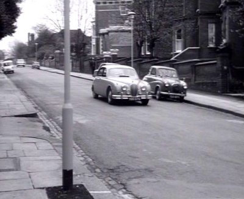 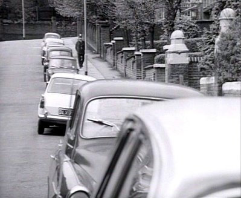 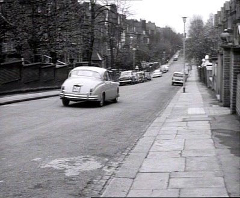
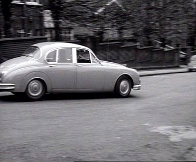 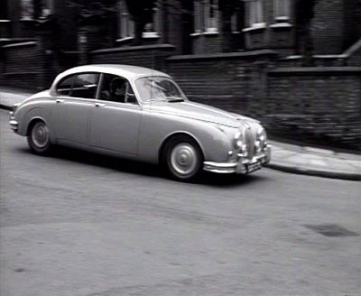 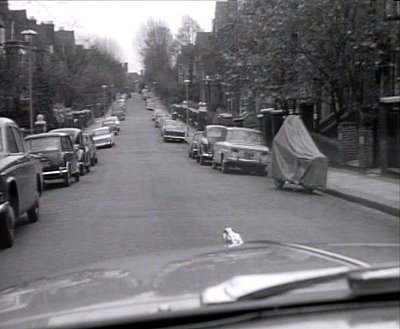
(Identified by Mark Littlefield, November 2007)
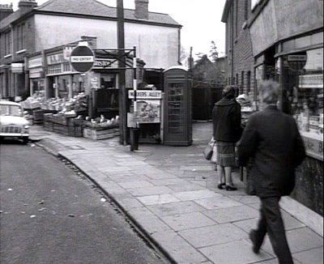

Borehamwood - Rachel’s stays with Mrs. Moss. Larry Larkin
(Dervis Ward)
attempts to run Rachel down as she leaves the house.
(Identified by Alan Field, December 2007)
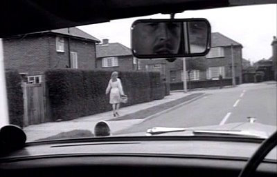 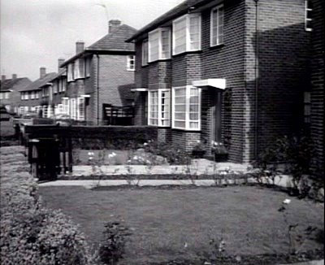
Borehamwood - Rachel’s stays with Mrs. Moss. Larry Larkin
(Dervis Ward)
attempts to run Rachel down as she leaves the house.
(Identified by Alan Field, December 2007)
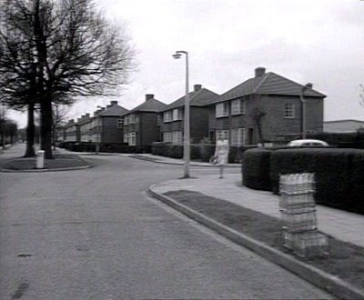 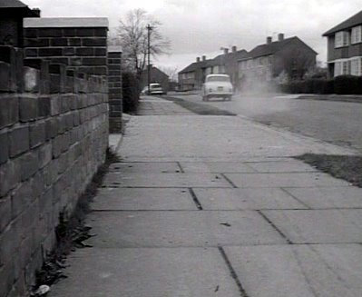
- Hearing at 9:30 in the morning. Old Bailey – on a murder charge.

– Gideon (John Gregson) watches as Syd Carter (David Gregory) is put into a prison van, after his hearing, and is driven away.
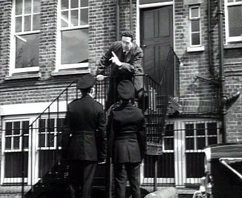


 William Pitt-JonesRandellsBingfieldBingfieldstreet
William Pitt-JonesRandellsBingfieldBingfieldstreet


(Identified by William Pitt-Jones, July 2007)

 William Pitt-JonesRandellsbeginingRuffordRandellsBingfield
William Pitt-JonesRandellsbeginingRuffordRandellsBingfield


– Gideon responds to the radio
message about the hijack at


- All available cars are called into the area.


– A patrol car spots the missing prison van and gives chase.
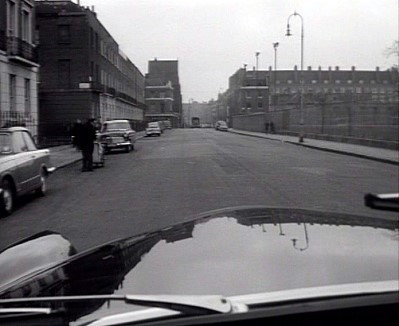 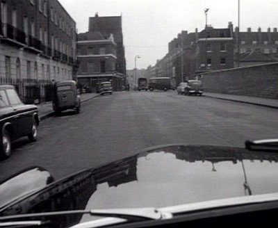
Think you know a spot? Need a bigger image? Email me.
< Previous | Index | Avengerland | Next >
Copyright © 2003 Anthony R. McKay